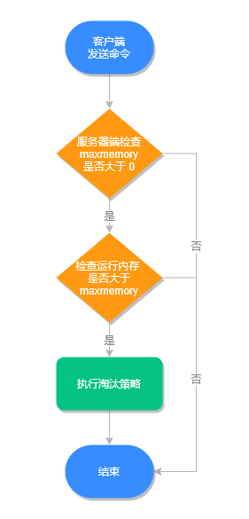

- 01 Redis 是如何执行的.md
- 02 Redis 快速搭建与使用.md
- 03 Redis 持久化——RDB.md
- 04 Redis 持久化——AOF.md
- 05 Redis 持久化——混合持久化.md
- 06 字符串使用与内部实现原理.md
- 07 附录：更多字符串操作命令.md
- 08 字典使用与内部实现原理.md
- 09 附录：更多字典操作命令.md
- 10 列表使用与内部实现原理.md
- 11 附录：更多列表操作命令.md
- 12 集合使用与内部实现原理.md
- 13 附录：更多集合操作命令.md
- 14 有序集合使用与内部实现原理.md
- 15 附录：更多有序集合操作命令.md
- 16 Redis 事务深入解析.md
- 17 Redis 键值过期操作.md
- 18 Redis 过期策略与源码分析.md
- 19 Redis 管道技术——Pipeline.md
- 20 查询附近的人——GEO.md
- 21 游标迭代器（过滤器）——Scan.md
- 22 优秀的基数统计算法——HyperLogLog.md
- 23 内存淘汰机制与算法.md
- 24 消息队列——发布订阅模式.md
- 25 消息队列的其他实现方式.md
- 26 消息队列终极解决方案——Stream（上）.md
- 27 消息队列终极解决方案——Stream（下）.md
- 28 实战：分布式锁详解与代码.md
- 29 实战：布隆过滤器安装与使用及原理分析.md
- 30 完整案例：实现延迟队列的两种方法.md
- 31 实战：定时任务案例.md
- 32 实战：RediSearch 高性能的全文搜索引擎.md
- 33 实战：Redis 性能测试.md
- 34 实战：Redis 慢查询.md
- 35 实战：Redis 性能优化方案.md
- 36 实战：Redis 主从同步.md
- 37 实战：Redis哨兵模式（上）.md
- 38 实战：Redis 哨兵模式（下）.md
- 39 实战：Redis 集群模式（上）.md
- 40 实战：Redis 集群模式（下）.md
- 41 案例：Redis 问题汇总和相关解决方案.md
- 42 技能学习指南.md
- 43 加餐：Redis 的可视化管理工具.md
23 内存淘汰机制与算法
在本文开始之前，我们先要明白：在 Redis 中，过期策略和内存淘汰策略两个完全不同的概念，但很多人会把两者搞混。
首先，Redis 过期策略指的是 Redis 使用那种策略，来删除已经过期的键值对；而 Redis 内存淘汰机制指的是，当 Redis 运行内存已经超过 Redis 设置的最大内存之后，将采用什么策略来删除符合条件的键值对，以此来保障 Redis 高效的运行。
过期策略前面的文章，我们已经详细地讲过了，本文我们重点来看 Redis 的内存淘汰机制。
Redis 最大运行内存
只有在 Redis 的运行内存达到了某个阀值，才会触发内存淘汰机制，这个阀值就是我们设置的最大运行内存，此值在 Redis 的配置文件中可以找到，配置项为 maxmemory。
内存淘汰执行流程，如下图所示：

查询最大运行内存
我们可以使用命令 config get maxmemory 来查看设置的最大运行内存，命令如下：
127.0.0.1:6379> config get maxmemory
1) "maxmemory"
2) "0"
我们发现此值竟然是 0，这是 64 位操作系统默认的值，当 maxmemory 为 0 时，表示没有内存大小限制。
小贴士：32 位操作系统，默认的最大内存值是 3GB。
内存淘汰策略
查看 Redis 内存淘汰策略
我们可以使用 config get maxmemory-policy 命令，来查看当前 Redis 的内存淘汰策略，命令如下：
127.0.0.1:6379> config get maxmemory-policy
1) "maxmemory-policy"
2) "noeviction"
可以看出此 Redis 使用的是 noeviction 类型的内存淘汰机制，它表示当运行内存超过最大设置内存时，不淘汰任何数据，但新增操作会报错。
内存淘汰策略分类
早期版本的 Redis 有以下 6 种淘汰策略：
- noeviction：不淘汰任何数据，当内存不足时，新增操作会报错，Redis 默认内存淘汰策略；
- allkeys-lru：淘汰整个键值中最久未使用的键值；
- allkeys-random：随机淘汰任意键值;
- volatile-lru：淘汰所有设置了过期时间的键值中最久未使用的键值；
- volatile-random：随机淘汰设置了过期时间的任意键值；
- volatile-ttl：优先淘汰更早过期的键值。
在 Redis 4.0 版本中又新增了 2 种淘汰策略：
- volatile-lfu：淘汰所有设置了过期时间的键值中，最少使用的键值；
- allkeys-lfu：淘汰整个键值中最少使用的键值。
其中 allkeys-xxx 表示从所有的键值中淘汰数据，而 volatile-xxx 表示从设置了过期键的键值中淘汰数据。
修改 Redis 内存淘汰策略
设置内存淘汰策略有两种方法，这两种方法各有利弊，需要使用者自己去权衡。
- 方式一：通过“config set maxmemory-policy 策略”命令设置。它的优点是设置之后立即生效，不需要重启 Redis 服务，缺点是重启 Redis 之后，设置就会失效。
- 方式二：通过修改 Redis 配置文件修改，设置“maxmemory-policy 策略”，它的优点是重启 Redis 服务后配置不会丢失，缺点是必须重启 Redis 服务，设置才能生效。
内存淘汰算法
从内测淘汰策略分类上，我们可以得知，除了随机删除和不删除之外，主要有两种淘汰算法：LRU 算法和 LFU 算法。
LRU 算法
LRU 全称是 Least Recently Used 译为最近最少使用，是一种常用的页面置换算法，选择最近最久未使用的页面予以淘汰。
1. LRU 算法实现
LRU 算法需要基于链表结构，链表中的元素按照操作顺序从前往后排列，最新操作的键会被移动到表头，当需要内存淘汰时，只需要删除链表尾部的元素即可。
2. 近 LRU 算法
Redis 使用的是一种近似 LRU 算法，目的是为了更好的节约内存，它的实现方式是给现有的数据结构添加一个额外的字段，用于记录此键值的最后一次访问时间，Redis 内存淘汰时，会使用随机采样的方式来淘汰数据，它是随机取 5 个值（此值可配置），然后淘汰最久没有使用的那个。
3. LRU 算法缺点
LRU 算法有一个缺点，比如说很久没有使用的一个键值，如果最近被访问了一次，那么它就不会被淘汰，即使它是使用次数最少的缓存，那它也不会被淘汰，因此在 Redis 4.0 之后引入了 LFU 算法，下面我们一起来看。
LFU 算法
LFU 全称是 Least Frequently Used 翻译为最不常用的，最不常用的算法是根据总访问次数来淘汰数据的，它的核心思想是“如果数据过去被访问多次，那么将来被访问的频率也更高”。
LFU 解决了偶尔被访问一次之后，数据就不会被淘汰的问题，相比于 LRU 算法也更合理一些。
在 Redis 中每个对象头中记录着 LFU 的信息，源码如下：
typedef struct redisObject {
unsigned type:4;
unsigned encoding:4;
unsigned lru:LRU_BITS; /* LRU time (relative to global lru_clock) or
* LFU data (least significant 8 bits frequency
* and most significant 16 bits access time). */
int refcount;
void *ptr;
} robj;
在 Redis 中 LFU 存储分为两部分，16 bit 的 ldt（last decrement time）和 8 bit 的 logc（logistic counter）。
- logc 是用来存储访问频次，8 bit 能表示的最大整数值为 255，它的值越小表示使用频率越低，越容易淘汰；
- ldt 是用来存储上一次 logc 的更新时间。
小结
通过本文我们了解到，Redis 内存淘汰策略和过期回收策略是完全不同的概念，内存淘汰策略是解决 Redis 运行内存过大的问题的，通过与 maxmemory 比较，决定要不要淘汰数据，根据 maxmemory-policy 参数，决定使用何种淘汰策略，在 Redis 4.0 之后已经有 8 种淘汰策略了，默认的策略是 noeviction 当内存超出时不淘汰任何键值，只是新增操作会报错。